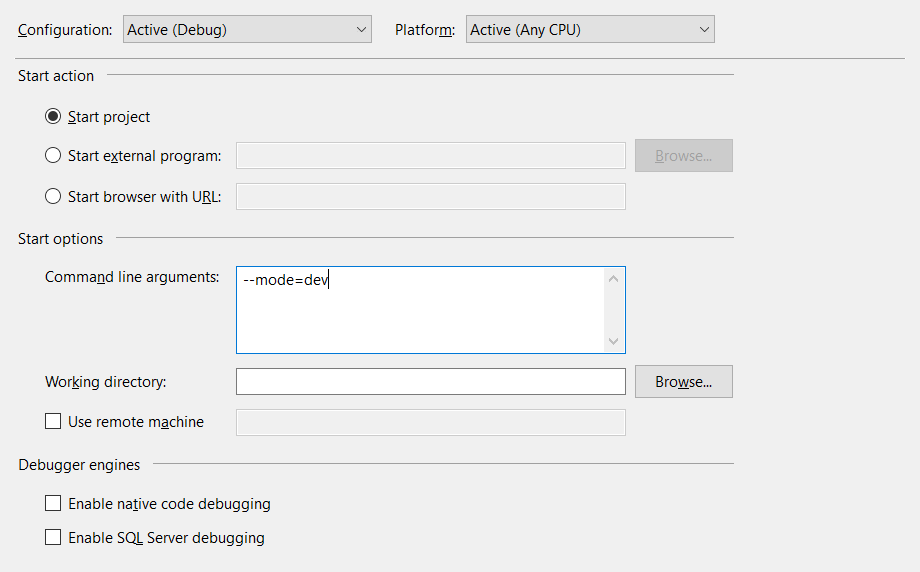

Modes
Application modes
This demo application has 3 modes:
Live:
Debug mode with hot-reload activated using file served by `npm run live` scripts.Dev:
Debug mode using local files.Prod:
No debug, using local files.
Note: when running in live mode, it is not needed to run manually npm run live this will be called automatically by the application.
Command line argument
Mode can be changed using command line argument:
Usage:
--mode=live
-m=dev --url=http://localhost:9090/index.html
-u=http://localhost:9091/index.html
Options:
-m --mode=(live|dev|prod) Set application mode.
-u --url=<uri> Set view url
